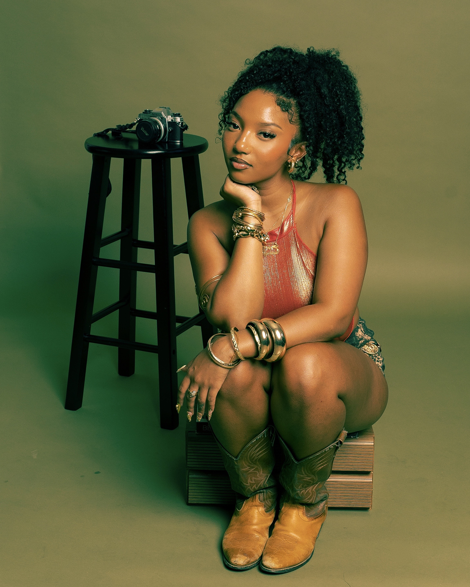
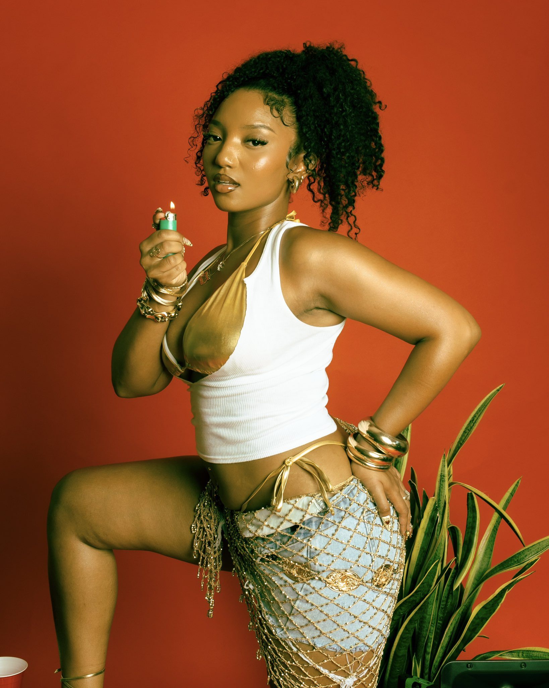

The People
Behind It
Ty To.ook It is an independent creative studio working across art direction, editorial photography, and brand consulting — built on the belief that every image should feel considered, not accidental.

Studio — Frame 01
Studio — 01Part studio,
part archive.
Ty To.ook It began as a personal photography practice and grew into a full creative studio — one that treats every shoot, exhibit, and brand collaboration as a chapter in a much larger story. The name is a play on looking closer, taking it all in, and making something worth keeping.
We work at the intersection of fashion, culture, and fine art: directing shoots, building visual identities, and consulting with brands who want their imagery to feel like it belongs in a gallery, not just a feed. Every project on this site — Vessel, Gradification, Union, Roots & Kulture, Features & Exhibits — represents a different question we were trying to answer through the camera.
What ties it all together is a refusal to settle for the obvious frame. We slow down, study the light, and only press the shutter when it means something.
Art Direction
From concept to final frame — moodboards, casting, styling, and on-set direction that keep every shoot cohesive and intentional.
Editorial Photography
Long-form visual stories built around a single idea, shot with the patience of a documentary and the precision of a magazine spread.
Creative Consulting
Helping brands and individuals define a visual language — and the discipline to actually stick to it across every touchpoint.
We don't chase trends — we chase truth. Every frame we shoot is meant to outlast the moment it was taken in, the same way a good archive outlasts the person who built it.